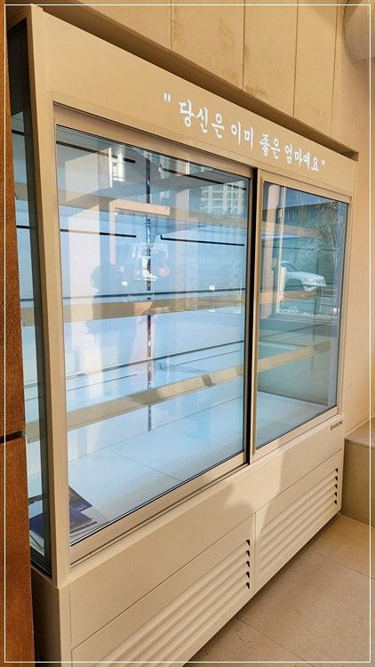
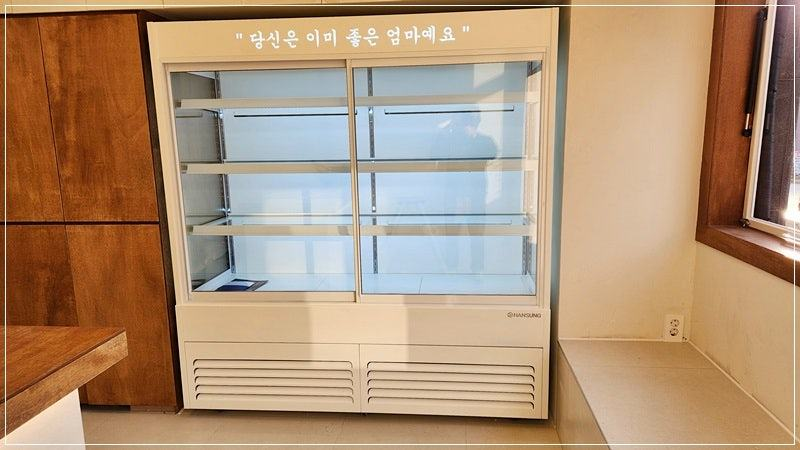
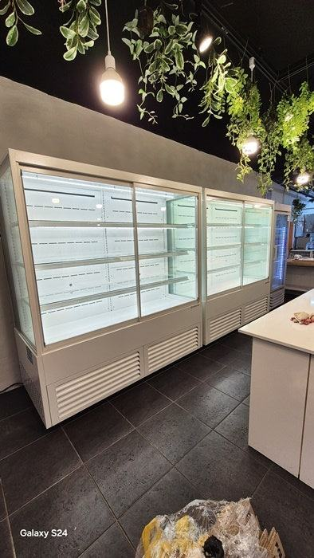

반찬(진열)쇼케이스
반찬쇼케이스 설치 전에 전기·배수·열 배출부터 확인하세요

반찬쇼케이스 설치는 들어갈 자리의 치수만큼이나 전용 전원, 배수 처리, 뒤쪽과 아래쪽 열 배출 공간, 출입문과 통로 폭을 미리 확인하는 것이 중요합니다. 이 네 가지가 정리돼 있으면 설치 당일 추가 공사 없이 바로 반찬을 채울 수 있습니다.
안녕하세요. 반찬가게 진열 냉장고를 매장에 맞춰 제작하고 설치까지 해 드리는 한성쇼케이스입니다.
반찬가게 사장님들은 오픈 날짜에 맞춰 반찬 메뉴를 준비하시느라 쇼케이스 설치는 "기사님 오시면 알아서 해 주겠지" 하고 넘기시는 경우가 많습니다.
그런데 설치 당일 콘센트가 멀거나 통로가 좁아 일정이 밀리는 일이 생각보다 자주 생깁니다.
반찬쇼케이스는 하루 종일 문이 열리고 닫히며, 국물 있는 반찬과 젓갈처럼 냄새와 습기가 있는 상품을 담는 장비입니다.
그래서 놓는 자리 주변 조건이 오래 쓰는 데 큰 영향을 줍니다.
오늘은 반찬쇼케이스 설치 전에 사장님이 직접 확인해 두시면 좋은 것들을 순서대로 정리해 보겠습니다.
1. 전원은 쇼케이스 전용으로
냉장 장비는 압축기가 켜질 때 순간적으로 전기를 많이 끌어 씁니다. 멀티탭에 다른 기기와 함께 꽂으면 차단기가 떨어지거나 접점이 과열될 수 있어, 쇼케이스 가까이에 전용 콘센트를 마련해 두시는 것이 안전합니다.
인테리어 공사 중이라면 쇼케이스 뒤쪽 어느 높이에 콘센트가 올지 미리 정해 두세요. 쇼케이스 몸체에 가려지는 위치라야 보기에도 깔끔하고 청소할 때 걸리지 않습니다.
- 쇼케이스 전용 콘센트를 따로 두세요.
- 멀티탭과 연장선은 피하세요.
2. 물이 빠지는 길과 바닥 수평
냉장 장비는 운전 중에 생기는 물을 밖으로 내보내야 합니다. 제품 구조에 따라 물받이를 비우는 방식인지, 배수구로 연결하는 방식인지가 다르니 설치 자리 근처 배수 여건을 미리 알려 주세요.
바닥 수평도 중요합니다. 바닥이 기울어 있으면 물이 한쪽으로 고이거나 문이 저절로 열리고 닫히는 일이 생깁니다.
타일 바닥에 경사가 있는 매장이라면 설치 때 높이 조절을 함께 봐야 합니다.


3. 뒤쪽과 아래쪽 열 배출 공간
쇼케이스는 안을 차갑게 만드는 만큼 바깥으로 열을 내보냅니다. 벽에 너무 바짝 붙이거나 아래쪽 통풍구 앞에 반찬 용기 상자를 쌓아 두면 열이 빠지지 못해 냉기가 약해지고 부품 부담이 커집니다.
반찬가게는 조리 공간과 판매 공간이 가까운 경우가 많습니다. 화구나 오븐 열기가 쇼케이스 쪽으로 넘어오지 않는지, 주방 환기 방향과 쇼케이스 위치가 겹치지 않는지도 확인해 보세요.
반찬쇼케이스는 문을 자주 여닫아 습기가 많이 들어오는 장비라 열 배출이 막히면 냉기 회복이 더뎌지고 유리에 김이 서리기 쉽습니다.
설치 자리를 정할 때 이 여유 공간을 처음부터 빼 두셔야 나중에 자리를 옮기는 수고가 없습니다.
- 벽과 쇼케이스 사이 간격을 남겨 두세요.
- 하부 통풍구 앞에는 물건을 두지 마세요.
- 조리 열기가 닿지 않는 자리를 고르세요.
4. 반입 경로와 손님 동선
가장 자주 놓치는 것이 반입 경로입니다. 출입문 폭, 계단이나 엘리베이터 크기, 꺾이는 복도가 있는지 미리 재 두셔야 설치 당일 문틀을 떼는 일이 없습니다.
자리를 정할 때는 손님이 쇼케이스 앞에 서서 반찬을 고르고 계산대로 가는 길이 자연스러운지 함께 보세요.
문을 열었을 때 통로를 막지 않는지, 사장님이 주방에서 반찬을 채우러 나오는 길이 짧은지도 중요합니다.
체크리스트
- 쇼케이스 전용 콘센트 위치
- 배수 방식과 근처 배수 여건
- 바닥 수평
- 벽과의 간격, 하부 통풍구
- 출입문·계단·통로 폭
- 손님 동선과 문 여닫는 공간
현장에서 자주 보는 경우: 기존 냉장고는 두고 한 대를 더 들일 때
반찬가게를 운영하시다 진열 공간이 모자라 영업용 반찬냉장고를 추가로 들이시는 경우가 많습니다. 이때는 기존 냉장고를 유지한 채 남은 공간에 넣어야 하므로, 정해진 크기의 기성품으로는 자리가 맞지 않는 일이 생깁니다.
그래서 설치할 위치에 맞춰 크기를 정해 제작하면 기존 냉장고를 치우거나 공간을 따로 마련하지 않고도 설치할 수 있습니다.
색상과 조명도 기존 장비와 매장 분위기에 맞춰 고르면 두 대가 나란히 있어도 어수선해 보이지 않습니다.
구매 전에 콤프레셔 같은 핵심 부품의 제조국과 사후관리 방식도 함께 확인해 보시길 권합니다.





자주 묻는 질문
설치하는 날 반찬을 바로 넣어도 되나요?
전원을 켜고 내부 온도가 충분히 내려간 것을 확인한 뒤 넣으시는 것이 좋습니다. 설치 기사님께 안정되는 시점을 확인해 두세요.
반찬 국물이 흘러 내부에 고이면 어떻게 하나요?
바로 닦아 내고, 배수 구멍이나 물받이 쪽으로 이물질이 들어가지 않았는지 확인해 주세요. 국물 있는 반찬은 뚜껑 있는 용기나 깊은 트레이를 쓰시면 내부 관리가 훨씬 쉬워집니다.
기존 냉장고와 높이를 맞출 수 있나요?
기존 장비의 높이와 폭을 알려 주시면 나란히 놓았을 때 선이 맞도록 크기를 정해 제작할 수 있습니다.
매장 조건에 맞춰 만드는 한성쇼케이스
원하시는 제품 사진과 설치할 공간 사진만 보내 주셔도 매장에 맞는 구성을 추천해 드립니다.
- 전국 240여 개 A/S 전담 센터 운영
- 본사 대량 자재 매입으로 품질 대비 합리적인 가격
- 유럽제·삼성 냉각 콤프레셔 적용
- 국내 최초 쇼케이스 전문 디자이너 상주
매장 폭과 원하는 진열 구성을 알려 주세요. 실측과 견적을 안내해 드립니다.
031-986-2458